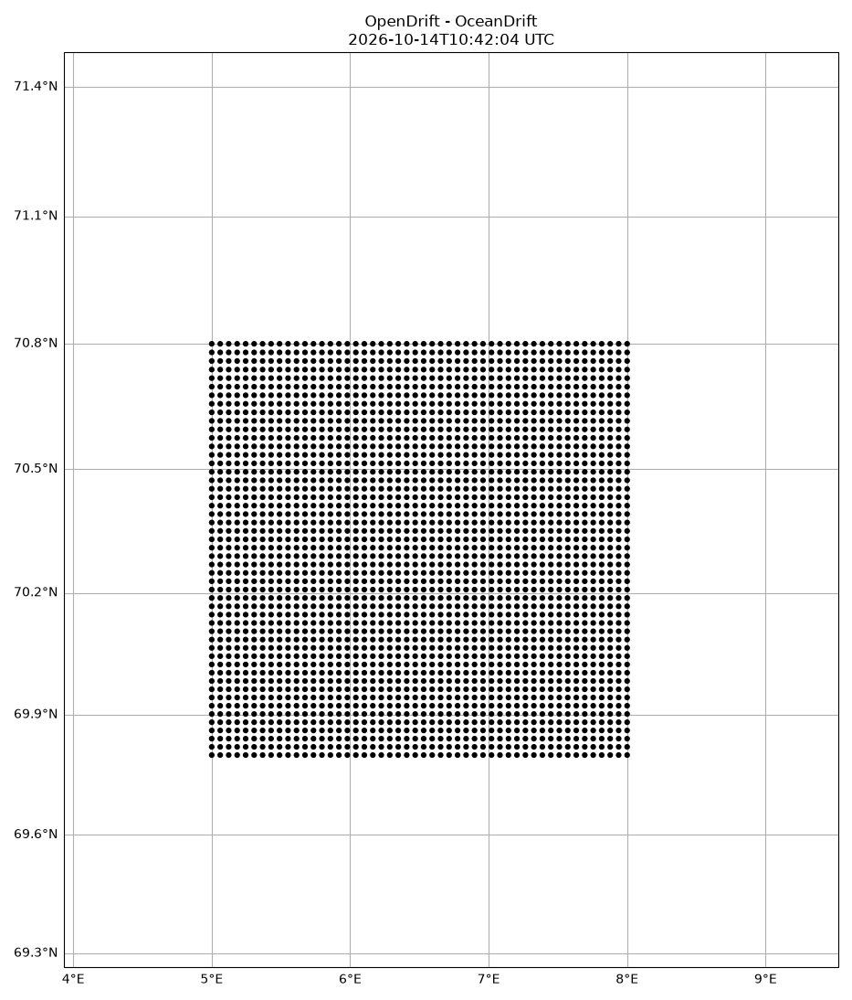
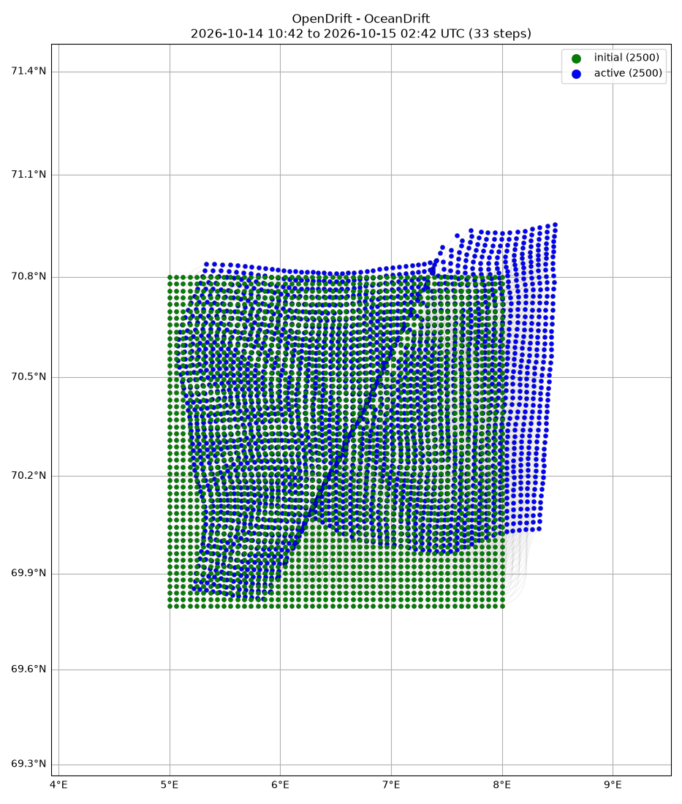

Note
Go to the end to download the full example code.
Reader boundary
Seeding elements around the border of a ocean model domain (NorKyst800) to demonstrate autmatic transition back and forth with another model covering a larger domain (Topaz).
from datetime import datetime
import numpy as np
from opendrift.readers import reader_netCDF_CF_generic
from opendrift.models.oceandrift import OceanDrift
o = OceanDrift(loglevel=20) # Set loglevel to 0 for debug information
# Norkyst
reader_norkyst = reader_netCDF_CF_generic.Reader('https://thredds.met.no/thredds/dodsC/fou-hi/norkystv3_800m_m00_be')
# Topaz
reader_topaz = reader_netCDF_CF_generic.Reader('https://thredds.met.no/thredds/dodsC/cmems/topaz6/dataset-topaz6-arc-15min-3km-be.ncml')
o.add_reader([reader_norkyst, reader_topaz])
o.set_config('environment:fallback:land_binary_mask', 0)
o.set_config('drift:vertical_mixing', False)
10:41:56 INFO opendrift:569: OpenDriftSimulation initialised (version 1.14.11 / v1.14.12-52-g71f4a5f)
10:41:56 INFO opendrift.readers:67: Opening file with xr.open_dataset
10:41:58 INFO opendrift.readers.reader_netCDF_CF_generic:340: Detected dimensions: {'x': 'X', 'y': 'Y', 'z': 'depth', 'time': 'time'}
10:41:58 INFO opendrift.readers.basereader:175: Variable x_sea_water_velocity will be rotated from eastward_sea_water_velocity
10:41:58 INFO opendrift.readers.basereader:175: Variable y_sea_water_velocity will be rotated from northward_sea_water_velocity
10:41:58 INFO opendrift.readers.basereader:175: Variable x_wind will be rotated from eastward_wind
10:41:58 INFO opendrift.readers.basereader:175: Variable y_wind will be rotated from northward_wind
10:41:58 INFO opendrift.readers:67: Opening file with xr.open_dataset
10:42:04 INFO opendrift.readers.reader_netCDF_CF_generic:340: Detected dimensions: {'x': 'x', 'y': 'y', 'time': 'time'}
Seeding some particles
lons = np.linspace(5, 8, 50)
lats = np.linspace(69.8, 70.8, 50)
lons, lats = np.meshgrid(lons, lats)
Seed oil elements at defined position and time
o.seed_elements(lons, lats, radius=0, number=2500,
time=datetime.now())
10:42:04 INFO opendrift.models.basemodel.environment:203: Adding a global landmask from GSHHG
10:42:10 INFO opendrift.models.basemodel.environment:227: Fallback values will be used for the following variables which have no readers:
10:42:10 INFO opendrift.models.basemodel.environment:230: horizontal_diffusivity: 0.000000
10:42:10 INFO opendrift.models.basemodel.environment:230: sea_surface_wave_significant_height: 0.000000
10:42:10 INFO opendrift.models.basemodel.environment:230: sea_surface_wave_stokes_drift_x_velocity: 0.000000
10:42:10 INFO opendrift.models.basemodel.environment:230: sea_surface_wave_stokes_drift_y_velocity: 0.000000
10:42:10 INFO opendrift.models.basemodel.environment:230: ocean_mixed_layer_thickness: 50.000000
Running model
o.run(steps=16*4, time_step=900, time_step_output=1800)
10:42:10 INFO opendrift:1910: Skipping environment variable ocean_vertical_diffusivity because of condition ['drift:vertical_mixing', 'is', False]
10:42:10 INFO opendrift:1910: Skipping environment variable ocean_mixed_layer_thickness because of condition ['drift:vertical_mixing', 'is', False]
10:42:10 INFO opendrift:1921: Storing previous values of element property lon because of condition (('general:coastline_action', 'in', ['stranding', 'previous']), 'or', ('general:seafloor_action', 'in', ['previous']))
10:42:10 INFO opendrift:1921: Storing previous values of element property lat because of condition (('general:coastline_action', 'in', ['stranding', 'previous']), 'or', ('general:seafloor_action', 'in', ['previous']))
10:42:10 INFO opendrift:1929: Storing previous values of environment variable sea_surface_height because of condition ['drift:vertical_advection', 'is', True]
10:42:10 INFO opendrift:958: Using existing reader for land_binary_mask to move elements to ocean
10:42:10 INFO opendrift:989: All points are in ocean
10:42:10 INFO opendrift:2237: 2026-10-14 10:42:04.964698 - step 1 of 64 - 2500 active elements (0 deactivated)
10:42:28 INFO opendrift:2237: 2026-10-14 10:57:04.964698 - step 2 of 64 - 2500 active elements (0 deactivated)
10:42:28 INFO opendrift:2237: 2026-10-14 11:12:04.964698 - step 3 of 64 - 2500 active elements (0 deactivated)
10:42:30 INFO opendrift:2237: 2026-10-14 11:27:04.964698 - step 4 of 64 - 2500 active elements (0 deactivated)
10:42:31 INFO opendrift:2237: 2026-10-14 11:42:04.964698 - step 5 of 64 - 2500 active elements (0 deactivated)
10:42:32 INFO opendrift:2237: 2026-10-14 11:57:04.964698 - step 6 of 64 - 2500 active elements (0 deactivated)
10:42:33 INFO opendrift:2237: 2026-10-14 12:12:04.964698 - step 7 of 64 - 2500 active elements (0 deactivated)
10:42:35 INFO opendrift:2237: 2026-10-14 12:27:04.964698 - step 8 of 64 - 2500 active elements (0 deactivated)
10:42:36 INFO opendrift:2237: 2026-10-14 12:42:04.964698 - step 9 of 64 - 2500 active elements (0 deactivated)
10:42:36 INFO opendrift:2237: 2026-10-14 12:57:04.964698 - step 10 of 64 - 2500 active elements (0 deactivated)
10:42:37 INFO opendrift:2237: 2026-10-14 13:12:04.964698 - step 11 of 64 - 2500 active elements (0 deactivated)
10:42:40 INFO opendrift:2237: 2026-10-14 13:27:04.964698 - step 12 of 64 - 2500 active elements (0 deactivated)
10:42:40 INFO opendrift:2237: 2026-10-14 13:42:04.964698 - step 13 of 64 - 2500 active elements (0 deactivated)
10:42:41 INFO opendrift:2237: 2026-10-14 13:57:04.964698 - step 14 of 64 - 2500 active elements (0 deactivated)
10:42:42 INFO opendrift:2237: 2026-10-14 14:12:04.964698 - step 15 of 64 - 2500 active elements (0 deactivated)
10:42:46 INFO opendrift:2237: 2026-10-14 14:27:04.964698 - step 16 of 64 - 2500 active elements (0 deactivated)
10:42:47 INFO opendrift:2237: 2026-10-14 14:42:04.964698 - step 17 of 64 - 2500 active elements (0 deactivated)
10:42:47 INFO opendrift:2237: 2026-10-14 14:57:04.964698 - step 18 of 64 - 2500 active elements (0 deactivated)
10:42:48 INFO opendrift:2237: 2026-10-14 15:12:04.964698 - step 19 of 64 - 2500 active elements (0 deactivated)
10:42:50 INFO opendrift:2237: 2026-10-14 15:27:04.964698 - step 20 of 64 - 2500 active elements (0 deactivated)
10:42:51 INFO opendrift:2237: 2026-10-14 15:42:04.964698 - step 21 of 64 - 2500 active elements (0 deactivated)
10:42:52 INFO opendrift:2237: 2026-10-14 15:57:04.964698 - step 22 of 64 - 2500 active elements (0 deactivated)
10:42:52 INFO opendrift:2237: 2026-10-14 16:12:04.964698 - step 23 of 64 - 2500 active elements (0 deactivated)
10:42:55 INFO opendrift:2237: 2026-10-14 16:27:04.964698 - step 24 of 64 - 2500 active elements (0 deactivated)
10:42:56 INFO opendrift:2237: 2026-10-14 16:42:04.964698 - step 25 of 64 - 2500 active elements (0 deactivated)
10:42:57 INFO opendrift:2237: 2026-10-14 16:57:04.964698 - step 26 of 64 - 2500 active elements (0 deactivated)
10:42:57 INFO opendrift:2237: 2026-10-14 17:12:04.964698 - step 27 of 64 - 2500 active elements (0 deactivated)
10:43:00 INFO opendrift:2237: 2026-10-14 17:27:04.964698 - step 28 of 64 - 2500 active elements (0 deactivated)
10:43:01 INFO opendrift:2237: 2026-10-14 17:42:04.964698 - step 29 of 64 - 2500 active elements (0 deactivated)
10:43:01 INFO opendrift:2237: 2026-10-14 17:57:04.964698 - step 30 of 64 - 2500 active elements (0 deactivated)
10:43:02 INFO opendrift:2237: 2026-10-14 18:12:04.964698 - step 31 of 64 - 2500 active elements (0 deactivated)
10:43:05 INFO opendrift:2237: 2026-10-14 18:27:04.964698 - step 32 of 64 - 2500 active elements (0 deactivated)
10:43:05 INFO opendrift:2237: 2026-10-14 18:42:04.964698 - step 33 of 64 - 2500 active elements (0 deactivated)
10:43:06 INFO opendrift:2237: 2026-10-14 18:57:04.964698 - step 34 of 64 - 2500 active elements (0 deactivated)
10:43:07 INFO opendrift:2237: 2026-10-14 19:12:04.964698 - step 35 of 64 - 2500 active elements (0 deactivated)
10:43:10 INFO opendrift:2237: 2026-10-14 19:27:04.964698 - step 36 of 64 - 2500 active elements (0 deactivated)
10:43:11 INFO opendrift:2237: 2026-10-14 19:42:04.964698 - step 37 of 64 - 2500 active elements (0 deactivated)
10:43:12 INFO opendrift:2237: 2026-10-14 19:57:04.964698 - step 38 of 64 - 2500 active elements (0 deactivated)
10:43:12 INFO opendrift:2237: 2026-10-14 20:12:04.964698 - step 39 of 64 - 2500 active elements (0 deactivated)
10:43:15 INFO opendrift:2237: 2026-10-14 20:27:04.964698 - step 40 of 64 - 2500 active elements (0 deactivated)
10:43:16 INFO opendrift:2237: 2026-10-14 20:42:04.964698 - step 41 of 64 - 2500 active elements (0 deactivated)
10:43:17 INFO opendrift:2237: 2026-10-14 20:57:04.964698 - step 42 of 64 - 2500 active elements (0 deactivated)
10:43:18 INFO opendrift:2237: 2026-10-14 21:12:04.964698 - step 43 of 64 - 2500 active elements (0 deactivated)
10:43:30 INFO opendrift:2237: 2026-10-14 21:27:04.964698 - step 44 of 64 - 2500 active elements (0 deactivated)
10:43:31 INFO opendrift:2237: 2026-10-14 21:42:04.964698 - step 45 of 64 - 2500 active elements (0 deactivated)
10:43:32 INFO opendrift:2237: 2026-10-14 21:57:04.964698 - step 46 of 64 - 2500 active elements (0 deactivated)
10:43:32 INFO opendrift:2237: 2026-10-14 22:12:04.964698 - step 47 of 64 - 2500 active elements (0 deactivated)
10:43:36 INFO opendrift:2237: 2026-10-14 22:27:04.964698 - step 48 of 64 - 2500 active elements (0 deactivated)
10:43:37 INFO opendrift:2237: 2026-10-14 22:42:04.964698 - step 49 of 64 - 2500 active elements (0 deactivated)
10:43:37 WARNING opendrift.readers.basereader.structured:324: Data block from https://thredds.met.no/thredds/dodsC/fou-hi/norkystv3_800m_m00_be not large enough to cover element positions within timestep. Buffer size (11) must be increased. See `Variables.set_buffer_size`.
10:43:37 WARNING opendrift.readers.basereader.structured:324: Data block from https://thredds.met.no/thredds/dodsC/cmems/topaz6/dataset-topaz6-arc-15min-3km-be.ncml not large enough to cover element positions within timestep. Buffer size (3) must be increased. See `Variables.set_buffer_size`.
10:43:37 WARNING opendrift.readers.basereader.structured:324: Data block from https://thredds.met.no/thredds/dodsC/fou-hi/norkystv3_800m_m00_be not large enough to cover element positions within timestep. Buffer size (11) must be increased. See `Variables.set_buffer_size`.
10:43:37 INFO opendrift:2237: 2026-10-14 22:57:04.964698 - step 50 of 64 - 2500 active elements (0 deactivated)
10:43:38 INFO opendrift:2237: 2026-10-14 23:12:04.964698 - step 51 of 64 - 2500 active elements (0 deactivated)
10:43:41 INFO opendrift:2237: 2026-10-14 23:27:04.964698 - step 52 of 64 - 2500 active elements (0 deactivated)
10:43:41 WARNING opendrift.readers.basereader.structured:324: Data block from https://thredds.met.no/thredds/dodsC/fou-hi/norkystv3_800m_m00_be not large enough to cover element positions within timestep. Buffer size (11) must be increased. See `Variables.set_buffer_size`.
10:43:42 WARNING opendrift.readers.basereader.structured:324: Data block from https://thredds.met.no/thredds/dodsC/fou-hi/norkystv3_800m_m00_be not large enough to cover element positions within timestep. Buffer size (11) must be increased. See `Variables.set_buffer_size`.
10:43:42 INFO opendrift:2237: 2026-10-14 23:42:04.964698 - step 53 of 64 - 2500 active elements (0 deactivated)
10:43:42 WARNING opendrift.readers.basereader.structured:324: Data block from https://thredds.met.no/thredds/dodsC/fou-hi/norkystv3_800m_m00_be not large enough to cover element positions within timestep. Buffer size (11) must be increased. See `Variables.set_buffer_size`.
10:43:42 WARNING opendrift.readers.basereader.structured:324: Data block from https://thredds.met.no/thredds/dodsC/fou-hi/norkystv3_800m_m00_be not large enough to cover element positions within timestep. Buffer size (11) must be increased. See `Variables.set_buffer_size`.
10:43:42 INFO opendrift:2237: 2026-10-14 23:57:04.964698 - step 54 of 64 - 2500 active elements (0 deactivated)
10:43:42 WARNING opendrift.readers.basereader.structured:324: Data block from https://thredds.met.no/thredds/dodsC/fou-hi/norkystv3_800m_m00_be not large enough to cover element positions within timestep. Buffer size (11) must be increased. See `Variables.set_buffer_size`.
10:43:44 WARNING opendrift.readers.basereader.structured:324: Data block from https://thredds.met.no/thredds/dodsC/fou-hi/norkystv3_800m_m00_be not large enough to cover element positions within timestep. Buffer size (11) must be increased. See `Variables.set_buffer_size`.
10:43:44 INFO opendrift:2237: 2026-10-15 00:12:04.964698 - step 55 of 64 - 2500 active elements (0 deactivated)
10:43:45 WARNING opendrift.readers.basereader.structured:324: Data block from https://thredds.met.no/thredds/dodsC/fou-hi/norkystv3_800m_m00_be not large enough to cover element positions within timestep. Buffer size (11) must be increased. See `Variables.set_buffer_size`.
10:43:47 WARNING opendrift.readers.basereader.structured:324: Data block from https://thredds.met.no/thredds/dodsC/fou-hi/norkystv3_800m_m00_be not large enough to cover element positions within timestep. Buffer size (11) must be increased. See `Variables.set_buffer_size`.
10:43:47 INFO opendrift:2237: 2026-10-15 00:27:04.964698 - step 56 of 64 - 2500 active elements (0 deactivated)
10:43:48 INFO opendrift:2237: 2026-10-15 00:42:04.964698 - step 57 of 64 - 2500 active elements (0 deactivated)
10:43:48 WARNING opendrift.readers.basereader.structured:324: Data block from https://thredds.met.no/thredds/dodsC/fou-hi/norkystv3_800m_m00_be not large enough to cover element positions within timestep. Buffer size (11) must be increased. See `Variables.set_buffer_size`.
10:43:48 WARNING opendrift.readers.basereader.structured:324: Data block from https://thredds.met.no/thredds/dodsC/fou-hi/norkystv3_800m_m00_be not large enough to cover element positions within timestep. Buffer size (11) must be increased. See `Variables.set_buffer_size`.
10:43:48 INFO opendrift:2237: 2026-10-15 00:57:04.964698 - step 58 of 64 - 2500 active elements (0 deactivated)
10:43:48 WARNING opendrift.readers.basereader.structured:324: Data block from https://thredds.met.no/thredds/dodsC/fou-hi/norkystv3_800m_m00_be not large enough to cover element positions within timestep. Buffer size (11) must be increased. See `Variables.set_buffer_size`.
10:43:49 WARNING opendrift.readers.basereader.structured:324: Data block from https://thredds.met.no/thredds/dodsC/fou-hi/norkystv3_800m_m00_be not large enough to cover element positions within timestep. Buffer size (11) must be increased. See `Variables.set_buffer_size`.
10:43:49 INFO opendrift:2237: 2026-10-15 01:12:04.964698 - step 59 of 64 - 2500 active elements (0 deactivated)
10:43:55 INFO opendrift:2237: 2026-10-15 01:27:04.964698 - step 60 of 64 - 2500 active elements (0 deactivated)
10:43:56 INFO opendrift:2237: 2026-10-15 01:42:04.964698 - step 61 of 64 - 2500 active elements (0 deactivated)
10:43:56 INFO opendrift:2237: 2026-10-15 01:57:04.964698 - step 62 of 64 - 2500 active elements (0 deactivated)
10:43:57 INFO opendrift:2237: 2026-10-15 02:12:04.964698 - step 63 of 64 - 2500 active elements (0 deactivated)
10:44:00 INFO opendrift:2237: 2026-10-15 02:27:04.964698 - step 64 of 64 - 2500 active elements (0 deactivated)
Print and plot results
print(o)
o.animation(fast=True)
===========================
--------------------
Reader performance:
--------------------
https://thredds.met.no/thredds/dodsC/fou-hi/norkystv3_800m_m00_be
0:00:54.1 total
0:00:00.0 preparing
0:00:53.8 reading
0:00:00.3 interpolation
0:00:00.0 interpolation_time
0:00:00.3 rotating vectors
0:00:00.0 masking
--------------------
https://thredds.met.no/thredds/dodsC/cmems/topaz6/dataset-topaz6-arc-15min-3km-be.ncml
0:00:54.7 total
0:00:00.0 preparing
0:00:54.6 reading
0:00:00.0 interpolation
0:00:00.0 interpolation_time
0:00:00.1 rotating vectors
0:00:00.0 masking
--------------------
global_landmask
0:00:00.0 total
0:00:00.0 preparing
0:00:00.0 reading
0:00:00.0 masking
--------------------
Performance:
2:04.8 total time
14.0 configuration
0.0 preparing main loop
0.0 moving elements to ocean
1:50.7 main loop
0.1 updating elements
0.0 cleaning up
--------------------
===========================
Model: OceanDrift (OpenDrift version 1.14.11)
2500 active Lagrangian3DArray particles (0 deactivated, 0 scheduled)
-------------------
Environment variables:
-----
sea_floor_depth_below_sea_level
sea_surface_height
x_sea_water_velocity
y_sea_water_velocity
1) https://thredds.met.no/thredds/dodsC/fou-hi/norkystv3_800m_m00_be
2) https://thredds.met.no/thredds/dodsC/cmems/topaz6/dataset-topaz6-arc-15min-3km-be.ncml
-----
upward_sea_water_velocity
x_wind
y_wind
1) https://thredds.met.no/thredds/dodsC/fou-hi/norkystv3_800m_m00_be
-----
land_binary_mask
1) global_landmask
-----
Readers not added for the following variables:
horizontal_diffusivity
sea_surface_wave_significant_height
sea_surface_wave_stokes_drift_x_velocity
sea_surface_wave_stokes_drift_y_velocity
Discarded readers:
Time:
Start: 2026-10-14 10:42:04.964698 UTC
Present: 2026-10-15 02:42:04.964698 UTC
Calculation steps: 64 * 0:15:00 - total time: 16:00:00
Output steps: 33 * 0:30:00
===========================
10:44:01 WARNING opendrift:2613: Plotting fast. This will make your plots less accurate.
10:44:03 INFO opendrift:4888: Saving animation to /root/project/docs/source/gallery/animations/example_reader_boundary_0.gif...
10:44:15 INFO opendrift:3296: Time to make animation: 0:00:14.517964

o.plot(fast=True)

10:44:15 WARNING opendrift:2613: Plotting fast. This will make your plots less accurate.
(<GeoAxes: title={'center': 'OpenDrift - OceanDrift\n2026-10-14 10:42 to 2026-10-15 02:42 UTC (33 steps)'}>, <Figure size 933.375x1100 with 1 Axes>)
Total running time of the script: (2 minutes 32.553 seconds)